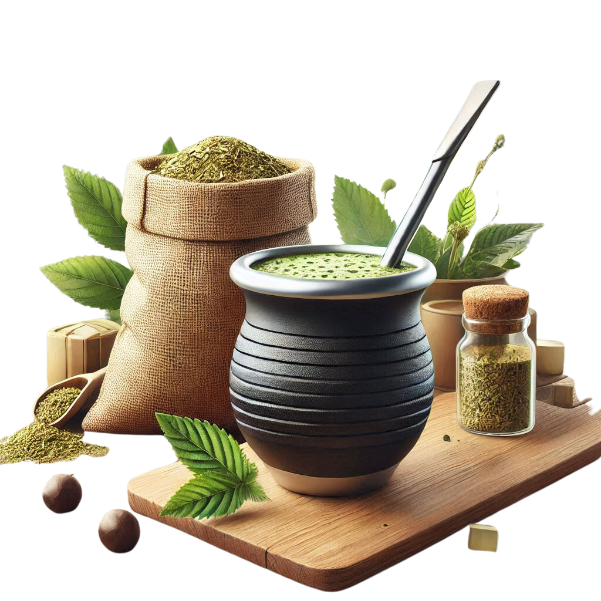

Sobre nuestro producto
Nuestro mate está cuidadosamente seleccionado y cultivado
en las mejores tierras argentinas, donde el clima y el suelo
favorecen el crecimiento de la yerba mate de la más alta calidad.
Cada hoja es procesada de forma tradicional, asegurando que se
mantengan todos los nutrientes y el sabor que hacen al mate tan especial.
La yerba mate que ofrecemos es de una frescura incomparable.
Su sabor único, que varía desde suave hasta intenso, es perfecto
tanto para aquellos que se inician en el mundo del mate como para
los más experimentados. Ofrecemos una variedad de opciones para que
puedas elegir la que mejor se adapte a tu gusto y estilo de vida.
Información